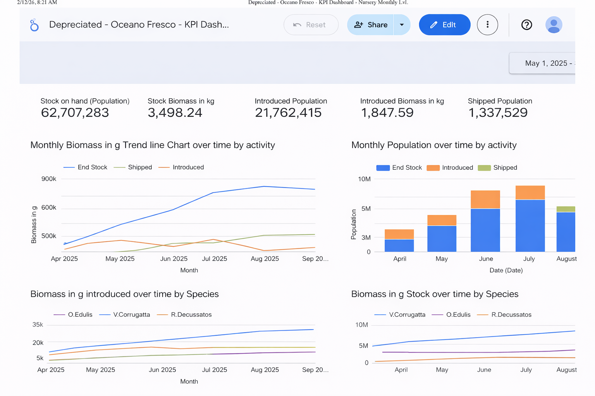

Master's Thesis — Nova School of Business & Economics
Oceano Fresco is a Portuguese aquaculture scale-up that farms premium native European bivalves (clams and oysters) across a fully vertically integrated production cycle — from spawning in a hatchery, through a nursery stage, to an offshore open-sea farm off the coast of the Algarve. They're one of very few companies in the world attempting to industrialize the farming of these hard-to-grow native species.
The challenge: as the company prepared to scale from R&D to commercial operations, their data infrastructure couldn't keep up. Operational records were scattered across site-specific Excel files with inconsistent formats, no unified batch tracking, and zero financial KPI visibility. Leadership lacked a formal model for critical financial metrics like runway and unit economics. The company was making major scaling decisions on intuition rather than data.
My role: I led the dashboarding theory and application for the team — designing the six-step methodology that translated stakeholder needs into a functional MVP dashboard, grounded in decision-science theory, Lean Startup principles, and human-centered design. My individual thesis section covered the full theoretical framework for how to design dashboards in startup contexts.
Rather than starting with "what data do we have?", I built a methodology that starts with "what decisions do we need to support?" This decision-driven approach, synthesized from Balanced Scorecard theory, Simon's intelligence-design-choice model, information quality research, and Lean Startup validated-learning loops, produced a six-stage process:
Before designing anything, we mapped Oceano Fresco's reality through on-site visits, semi-structured interviews, and deep analysis of their existing data files. What we found:
We developed a Data-Dashboard Readiness Quadrant — a framework that plots strategic importance against data quality at the metric level — to separate what we could build now from what required infrastructure investment first:
Quadrant 1 (Dashboard Now): Hatchery spawn success, seed output, larval survival, batch tracking — roughly 25% of the North Star scope. This data was structured, consistent, and reliable.
Quadrant 2 (Improve Data First): Financial health (cost-per-kg, runway), sales performance, farm growth curves, nursery survival, end-to-end batch traceability — the other 75%. Strategically critical, but the data wasn't there yet.
This was the honest assessment: we could track the input bottleneck (hatchery), but we couldn't yet assess how effectively that production translated into commercial outcomes. The executive layer of the North Star — profitability dashboards, cash position overviews — would require foundational data engineering work before it could go live.
We chose Google Looker Studio connected to Google Sheets — free, shareable under NDA constraints, and compatible with Oceano Fresco's existing Excel workflows. The goal wasn't to build the perfect dashboard; it was to build the minimum viable one that could demonstrate value and start changing how the company thinks about data.
This wasn't a single build — it was a series of iterations, each one teaching us something the last one couldn't.
The first version was rough. We took whatever data Oceano Fresco had — inconsistent Excel files with mixed formats, broken batch IDs, and gaps everywhere — and forced it into a five-page dashboard mirroring the North Star architecture: executive overview, hatchery, nursery, farm, and financials.
MVP 1: The nursery executive overview. All data shown is synthetic. It looks like a dashboard, but under the hood the data was skewed, broken, and incomplete. No end-to-end batch traceability, no way to track a cohort across production stages, and zero financial information. A polished shell on top of a fragmented foundation.
Honestly, the data was trash. Date formats didn't match across sites, decimal separators switched between periods and commas depending on who entered the data, and batch IDs changed when clams moved between stages — making end-to-end traceability impossible. You couldn't follow a single batch from spawn to harvest. There was no way to see how a cohort performed over time, no way to link upstream hatchery decisions to downstream farm outcomes. The farm data was so structurally incoherent we couldn't even reorganize it for dashboarding. And on the financial side? Nothing. No cost-per-kilogram, no revenue attribution, no runway model — just a blank page where the most strategically important views were supposed to live.
But that was the point. We presented MVP 1 to the leadership team — not to show a polished product, but to make the data problems impossible to ignore. The charts were skewed, the numbers couldn't be trusted, and the financial tab was empty. They responded positively to the executive structure and drill-down capabilities, calling it a significant improvement over static Excel reports. More importantly, the session confirmed exactly where the data broke: no batch traceability across stages, nursery inconsistencies that made survival and growth metrics unreliable, and a complete absence of financial data.
MVP 1 wasn't useful as a decision tool. But it was invaluable as a diagnostic — it showed everyone in the room exactly why the data infrastructure needed investment before the dashboard could deliver real value. Sometimes the most useful thing a dashboard can do is prove it doesn't work yet.
With the data gaps confirmed, we took a different approach. Rather than waiting for Oceano Fresco to fix their data infrastructure (which would take months), we synthesized a biologically plausible, internally consistent dataset grounded in interview insights. The goal was to show what the North Star could look like with clean data — giving stakeholders something concrete to work toward. Key decisions:
MVP 2 made the North Star tangible. Stakeholders noted it offered a "clearer and more coherent breakdown of information" than anything they'd had before, and expressed interest in adopting the synthesized Google Sheets as a reference format for future data collection. The jump from MVP 1 to MVP 2 wasn't just a better dashboard — it was proof that the framework worked, and that the gap between where they were and where they needed to be was closeable.
The embedded dashboard below is the final MVP we delivered to Oceano Fresco. All data is synthetic — biologically plausible values generated to demonstrate the framework, not real company data. It demonstrates the three-tier information architecture: executive-level trade-off visibility, operational drill-downs by production stage, and the financial views that connect biological performance to business outcomes.
The dashboard was always meant to be the starting point, not the endpoint. We defined a four-phase roadmap to evolve the MVP into a mature decision intelligence platform: